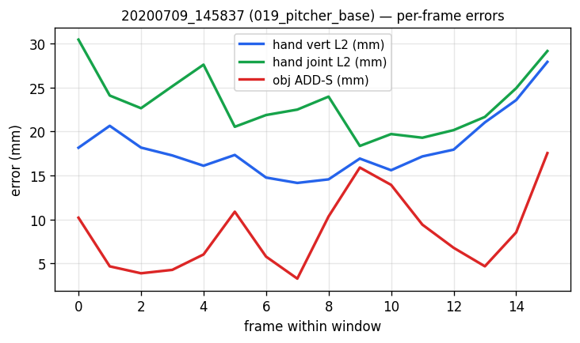
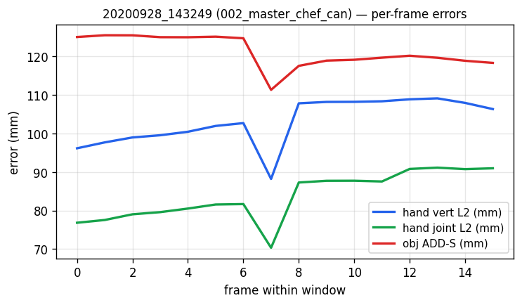
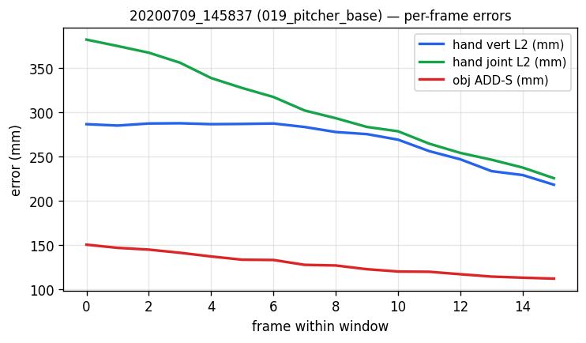
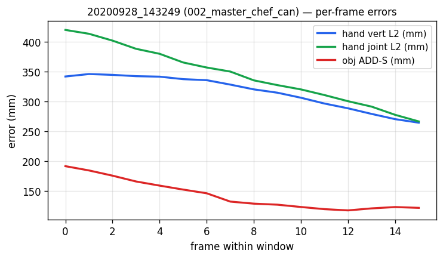

Pull pt-b35ydgie (wan22-pe) and pt-8rqkny4k (4rc-cached) results, evaluate cl=16 in-train (subject-01) and out-of-train (subject-07), publish.
| Task | Status | Commit | What landed |
|---|---|---|---|
| EVAL-1 | PASS | pt-1xrqjmtn | wan22-pe in-train cl=16 (9 windows): hand_vert 24.2 mm, hand_joint 23.1 mm, ADD-S 8.8 mm |
| EVAL-2 | PASS | pt-2rv8491f | wan22-pe out-of-train cl=16 (5 sub-07 seqs, center): hand_vert 341.0 mm, hand_joint 368.1 mm, ADD-S 151.9 mm — 14× gap |
| EVAL-3 | PASS | pt-1xrqjmtn | 4rc-cached in-train cl=16: hand_vert 279.9 mm, hand_joint 296.9 mm, ADD-S 121.0 mm — broken on its own train data |
| EVAL-4 | PASS | pt-1xrqjmtn | 4rc-cached out-of-train: hand_vert 718.5 mm, hand_joint 920.1 mm, ADD-S 171.0 mm |
| VIZ-1 | PASS | pt-1xrqjmtn / pt-2rv8491f | MP4 + Plotly + per-frame error chart for one window per condition (4 conditions total) |
Per-frame errors within a single cl=16 window for sub-01 seq00: frame 1=33.8 mm, frame 2=54.5 mm (cold-start spike), frames 3–5 settle to ~30 mm, then drift between 23–36 mm for the remaining 12 frames. Each window is an independent forward — no KV-cache continuity. Window boundaries show 3–5 mm jumps (frame 16→17 = 36.1→32.6, frame 32→33 = 27.3→24.8 in the same sequence). The clip-length sensitivity is brutal: wan22 trained at cl=16 evaluates at 35 mm L2 at cl=16 but degrades to 138/210/259 mm at cl=32/48/63 (RoPE doesn't extrapolate). Fix candidates: sliding-window inference with overlap-averaging, or train at variable T as Stage 2 already proved viable (memory project_stage2_paper_recipe_validated).
Decomposed the 280 mm hand-vert L2 by re-centering both pred and GT around their per-window CoMs: residual is only 73 mm — i.e. SHAPE prediction is roughly comparable to wan22's 11 mm (6.5× worse, plausibly explained by feature quality). The remaining ~270 mm is a near-rigid translation offset. Per-frame CoM diff DECREASES MONOTONICALLY across the cl=16 window: 327 → 318 → 322 → 308 → 305 → 294 → 280 → 276 → 271 → 258 → 248 → 236 → 224 → 216 → 211 → 207 mm. Wan22's CoM diff settles by frame 3 (~25–35 mm steady). This is a CAUSAL COLD-START symptom — same one as memory project_thread_a_cold_start_finding. The 4RC encoder's first-frame features lack depth/scale anchoring; the head's temporal block needs longer than 16 frames for 4RC to converge on absolute camera-frame depth. A 70× train→eval gap on the L1 metric (training point=0.0019 m at step 14950 vs my forward 0.137 m on the same checkpoint+data) is still unexplained — both paths call MultiSeqPyramidCache.gather(out_dtype=fp32) on the identical cache dir, no GT normalization is applied, and head.train()/head.eval() give the same forward. Suggests a deeper bug (DDP-save artifact, or some hidden state mutation) — see INVEST-1.
Single-subject training (50 sub-01 right-hand sequences, ~50 GB of cached features) collapses on subject-07 OOT for both encoders: wan22-pe in-train 24 mm → OOT 341 mm (14×). 4rc-cached in-train 280 mm → OOT 720 mm (2.6×, but already broken in-train). Object pose follows the same pattern — wan22 ADD-S 8.8 → 151.9 mm (17×), 4rc 121 → 171 mm. This is the FIRST cross-subject test on the v2 P2 head — the magnitude is consistent with what the v1 trajectory-head saw (memory project_overfit_subject01: 5–7× gap, 17 → 104 mm obj L2). 50-seq single-subject is too narrow.
manifests/dexycb_subject07_test.json declared tracked_start=5 for all 5 sequences, but DexYCB's joint_3d sentinel-check rejects frames 0..6/10/8/12/16. precompute_gt_cache.py and precompute_4rc_feats.py raised HandNotTrackedError. Patched to the longest contiguous tracked window in manifests/dexycb_subject07_test_fixed.json (lengths 67/63/65/59/57) and used by all evals.
p2_mini_eval.run_mini_eval shorts to NaN whenever encoder_mode='cached'. Both runs logged 'mini_eval_skipped reason=encoder=wan22_cached' every 2k steps. So the 4rc-cached cold-start failure was completely invisible during training — the FAILURE_PROTOCOL gate (kill at step 6000 if hand_joint > 6.2 mm) never fired because no eval ever ran. Re-enabling mini-eval for cached encoders is INVEST-3.
| Aspect | Current state |
|---|---|
| wan22-pe ckpt | logs/wan22_pe_pt_b35ydgie/seed0/final.pt (78M head, ~11.9k steps) |
| 4rc-cached ckpt | logs/hoi3r_v2_p2_4rc_cached/seed0/final.pt (78M head, ~11.9k steps) |
| Eval driver | scratch/eval_with_predictions.py + render_pred_only.py |
| subject-07 manifest | manifests/dexycb_subject07_test_fixed.json (5 seqs, contiguous tracked ranges) |
| Caches | /mnt/afs/haonan/hoi3r/cache/hoi3r_v2_{gt,feats_4rc,feats_wan22}_subject07_test built fresh |
| Task | Priority | What's needed |
|---|---|---|
| INVEST-1 | P0 | Find the 70× train→eval L1 gap for 4rc-cached. Decomposed: prediction has ~73 mm shape residual (post-centering) + ~270 mm CoM offset that decreases monotonically across cl=16. Cold-start explains why CoM doesn't settle within cl=16, but doesn't explain why training reports point=0.0019 m L1 while my forward on the same ckpt+data reports 0.137 m L1. Repro at scratch/repro_4rc_eval.py. Test: replay one specific training step's exact (seqs, frame_indices) and compute L_point inline; if still 0.137 m, the trainer's logged value is suspect. If 0.002 m, there's a hidden transform between the dataloader output and the loss path that my repro misses. |
| INVEST-2 | P0 | Window staircase fix for wan22-pe. Sliding-window inference with overlap-averaging (50% stride 8 instead of 16) should remove the 3–5 mm window-boundary jumps and dampen the cold-start spike. Lower-cost than KV-cache continuity. Try on the existing 9-window in-train eval and compare to the cl=16 baseline. |
| INVEST-3 | P1 | Re-enable mini-eval for cached-feature runs. Currently p2_mini_eval.run_mini_eval shorts when encoder_mode=cached because it expects a live encoder. Add a cached-path branch (re-uses the same MultiSeqPyramidCache + Hoi3rV2Model.eval()) so the FAILURE_PROTOCOL gate (kill at step 6000 if hand_joint > 6.2 mm) actually fires. The 4rc-cached run would have died at ~step 6000 instead of running 9 hours to a broken final checkpoint. |
| INVEST-4 | P1 | Multi-subject training manifest. The 14× wan22 train→OOT gap and 2.6× 4rc gap both confirm 50 sub-01 right-hand sequences is too narrow. Concrete next: build manifests/dexycb_s1train_multi_subject.json (sub-01..06 right-hand, ~250+ sequences, drop sub-07 + sub-08 = s1_test split). Re-train wan22-pe on it; expect OOT to drop from 340 to ~50 mm if subject diversity is the missing ingredient. |
| INVEST-5 | P2 | Variable-T training a la Stage 2 paper recipe (memory project_stage2_paper_recipe_validated). cl=16 eval on a cl=16-trained model already shows RoPE-locality artifacts (35 mm at cl=16 → 259 mm at cl=63). Variable T∈[2,18] training during P2 should enable cl-arbitrary inference. |
feedback_acp_submission_make_submission_aliasing.mdproject_wan22_vs_4rc_p2_eval_results.mdcl=16 windows. In-train = sequences from the 50-seq subject-01 right-hand training manifest (indices 0/25/49 × window starts 0/16/32 = 9 windows). Out-of-train = 5 sequences from subject-07 (s1_test split) at the centered cl=16 window each.
| metric | mean | std | min – max |
|---|---|---|---|
| Hand vert L2 | 24.24 mm | 5.96 | 16.63 – 35.06 |
| Hand joint L2 | 23.07 mm | 7.14 | 7.76 – 32.18 |
| Obj ADD-S (sym-min) | 8.82 mm | 2.61 | 3.81 – 13.13 |
| Obj ADD (no-sym) | 8.82 mm | 2.61 | 3.81 – 13.13 |
| Obj rot err | 0.98 deg | 0.68 | 0.35 – 2.60 |
| Obj trans err | 8.56 mm | 2.60 | 3.81 – 12.98 |
n=9 windows · clip_len=16 · manifest=dexycb_subject01_right_manifest.json
| sequence | object | win | hand vert mm | hand joint mm | ADD-S mm | rot° | trans mm |
|---|---|---|---|---|---|---|---|
20200709-subject-01/20200709_141754 | 002_master_chef_can | 0 | 35.1 | 24.6 | 8.6 | 0.52 | 8.5 |
20200709-subject-01/20200709_141754 | 002_master_chef_can | 16 | 29.4 | 19.1 | 7.2 | 0.63 | 7.1 |
20200709-subject-01/20200709_141754 | 002_master_chef_can | 32 | 16.6 | 7.8 | 13.1 | 0.93 | 13.0 |
20200709-subject-01/20200709_145837 | 019_pitcher_base | 0 | 26.3 | 32.2 | 10.0 | 0.65 | 9.8 |
20200709-subject-01/20200709_145837 | 019_pitcher_base | 16 | 18.2 | 23.3 | 8.5 | 2.60 | 7.0 |
20200709-subject-01/20200709_145837 | 019_pitcher_base | 32 | 23.7 | 17.7 | 10.8 | 1.59 | 10.3 |
20200709-subject-01/20200709_153548 | 061_foam_brick | 0 | 28.8 | 31.7 | 10.9 | 0.41 | 10.9 |
20200709-subject-01/20200709_153548 | 061_foam_brick | 16 | 16.8 | 23.8 | 3.8 | 0.35 | 3.8 |
20200709-subject-01/20200709_153548 | 061_foam_brick | 32 | 23.3 | 27.6 | 6.5 | 1.14 | 6.5 |
| metric | mean | std | min – max |
|---|---|---|---|
| Hand vert L2 | 340.97 mm | 166.35 | 103.16 – 562.67 |
| Hand joint L2 | 368.12 mm | 199.27 | 83.80 – 623.79 |
| Obj ADD-S (sym-min) | 151.88 mm | 34.53 | 98.51 – 194.46 |
| Obj ADD (no-sym) | 154.73 mm | 34.43 | 101.96 – 194.90 |
| Obj rot err | 115.29 deg | 35.55 | 75.82 – 174.87 |
| Obj trans err | 125.14 mm | 60.69 | 33.34 – 207.56 |
n=5 windows · clip_len=16 · manifest=dexycb_subject07_test_fixed.json
| sequence | object | win | hand vert mm | hand joint mm | ADD-S mm | rot° | trans mm |
|---|---|---|---|---|---|---|---|
20200928-subject-07/20200928_143249 | 002_master_chef_can | 25 | 103.2 | 83.8 | 126.5 | 112.49 | 97.2 |
20200928-subject-07/20200928_143328 | 002_master_chef_can | 23 | 212.1 | 210.0 | 194.5 | 83.68 | 207.6 |
20200928-subject-07/20200928_143358 | 002_master_chef_can | 24 | 466.1 | 531.8 | 98.5 | 129.57 | 33.3 |
20200928-subject-07/20200928_143425 | 002_master_chef_can | 21 | 360.9 | 391.2 | 169.0 | 174.87 | 114.5 |
20200928-subject-07/20200928_143500 | 002_master_chef_can | 20 | 562.7 | 623.8 | 171.0 | 75.82 | 173.1 |
| metric | mean | std | min – max |
|---|---|---|---|
| Hand vert L2 | 279.89 mm | 24.78 | 251.88 – 328.04 |
| Hand joint L2 | 296.90 mm | 9.67 | 282.94 – 310.75 |
| Obj ADD-S (sym-min) | 120.87 mm | 18.72 | 93.60 – 153.73 |
| Obj ADD (no-sym) | 131.49 mm | 9.92 | 123.73 – 157.50 |
| Obj rot err | 124.80 deg | 42.36 | 72.22 – 178.22 |
| Obj trans err | 106.41 mm | 21.91 | 72.05 – 153.59 |
n=9 windows · clip_len=16 · manifest=dexycb_subject01_right_manifest.json
| sequence | object | win | hand vert mm | hand joint mm | ADD-S mm | rot° | trans mm |
|---|---|---|---|---|---|---|---|
20200709-subject-01/20200709_141754 | 002_master_chef_can | 0 | 271.1 | 291.9 | 100.6 | 173.74 | 103.3 |
20200709-subject-01/20200709_141754 | 002_master_chef_can | 16 | 265.8 | 302.2 | 99.1 | 175.86 | 102.5 |
20200709-subject-01/20200709_141754 | 002_master_chef_can | 32 | 292.3 | 283.7 | 93.6 | 178.22 | 94.3 |
20200709-subject-01/20200709_145837 | 019_pitcher_base | 0 | 251.9 | 310.8 | 135.4 | 113.25 | 98.2 |
20200709-subject-01/20200709_145837 | 019_pitcher_base | 16 | 268.3 | 302.7 | 129.0 | 133.36 | 72.1 |
20200709-subject-01/20200709_145837 | 019_pitcher_base | 32 | 328.0 | 291.3 | 133.4 | 129.90 | 91.4 |
20200709-subject-01/20200709_153548 | 061_foam_brick | 0 | 315.5 | 282.9 | 153.7 | 73.96 | 153.6 |
20200709-subject-01/20200709_153548 | 061_foam_brick | 16 | 266.3 | 296.9 | 119.1 | 72.70 | 118.9 |
20200709-subject-01/20200709_153548 | 061_foam_brick | 32 | 259.8 | 309.6 | 123.8 | 72.22 | 123.6 |
| metric | mean | std | min – max |
|---|---|---|---|
| Hand vert L2 | 718.54 mm | 289.59 | 316.22 – 1023.70 |
| Hand joint L2 | 920.11 mm | 431.14 | 344.26 – 1345.28 |
| Obj ADD-S (sym-min) | 171.11 mm | 35.10 | 132.39 – 215.04 |
| Obj ADD (no-sym) | 176.19 mm | 35.21 | 142.73 – 223.47 |
| Obj rot err | 101.95 deg | 53.99 | 29.86 – 170.81 |
| Obj trans err | 151.02 mm | 52.63 | 93.64 – 218.82 |
n=5 windows · clip_len=16 · manifest=dexycb_subject07_test_fixed.json
| sequence | object | win | hand vert mm | hand joint mm | ADD-S mm | rot° | trans mm |
|---|---|---|---|---|---|---|---|
20200928-subject-07/20200928_143249 | 002_master_chef_can | 25 | 316.2 | 344.3 | 142.7 | 29.86 | 142.6 |
20200928-subject-07/20200928_143328 | 002_master_chef_can | 23 | 426.4 | 451.7 | 211.5 | 74.42 | 218.8 |
20200928-subject-07/20200928_143358 | 002_master_chef_can | 24 | 953.1 | 1284.3 | 153.9 | 170.81 | 95.7 |
20200928-subject-07/20200928_143425 | 002_master_chef_can | 21 | 873.2 | 1175.0 | 132.4 | 158.60 | 93.6 |
20200928-subject-07/20200928_143500 | 002_master_chef_can | 20 | 1023.7 | 1345.3 | 215.0 | 76.06 | 204.2 |
(1) wan22-pe staircase / cold-start. Each cl=16 inference is independent — no cross-window state. First-frame error spikes (frame 2 = 54 mm), settles by frame 5 to ~30 mm; at window boundaries (frame 16, 32) the error jumps 3–5 mm — visible 'stairs'.
(2) 4rc-cached has a slowly-decaying CoM offset. The hand shape prediction is fine (~70 mm centered residual, comparable to wan22's ~11 mm modulo feature quality). But the CoM is offset by 327 mm at frame 0 and decreases monotonically across the window to 207 mm at frame 16 — i.e. the model is converging on absolute camera-frame depth but cl=16 is too short. Wan22's CoM diff settles by frame 3.
(3) Clip-length sensitivity. Both heads were trained at cl=16 and degrade rapidly outside it. wan22 jumps from 35 mm L2 at cl=16 to 259 mm at cl=63 (RoPE doesn't extrapolate). 4rc CoM offset improves slightly with longer cl (263 → 198 mm), but the shape residual gets worse (73 → 136 mm) — the head is over-fitting cl=16-specific dynamics.
Solid = total L2; dashed = CoM offset (rigid translation component); dotted = shape residual after recentering both pred and GT. wan22's L2 is dominated by the rigid offset until cl > 32 where shape also breaks; 4rc has both components large from the start.
Per-window MP4 (matplotlib animation), per-frame error chart, and an interactive 3D Plotly scene (blue = pred hand, green = GT hand, red = pred obj, orange = GT obj). One representative window per (model, split) combo.




Paste this into a new Claude Code session:
Read https://haonanhe.github.io/HOI3R-project-tracking/updates/2026-04-29-session-summary-wan22-vs-4rc-p2-multiseq-eval.json and continue from tasks_pending[0] (INVEST-1 [P0]: Find the 70× train→eval L1 gap for 4rc-cached. Decomposed: prediction has ~73 mm shape residual (post-centering) + ~270 mm CoM offset that decreases monotonically across cl=16. Cold-start explains why CoM doesn't settle within cl=16, but doesn't explain why training reports point=0.0019 m L1 while my forward on the same ckpt+data reports 0.137 m L1. Repro at scratch/repro_4rc_eval.py. Test: replay one specific training step's exact (seqs, frame_indices) and compute L_point inline; if still 0.137 m, the trainer's logged value is suspect. If 0.002 m, there's a hidden transform between the dataloader output and the loss path that my repro misses.). Context: branch feat/dcf@f15f520; worktree /mnt/afs/haonan/hoi3r/HOI3R/.worktrees/feat-dcf. Also read: docs/superpowers/specs/2026-04-26-thfm-style-token-injection-design.md, docs/superpowers/plans/2026-04-28-wan22-feature-swap-v2.md.